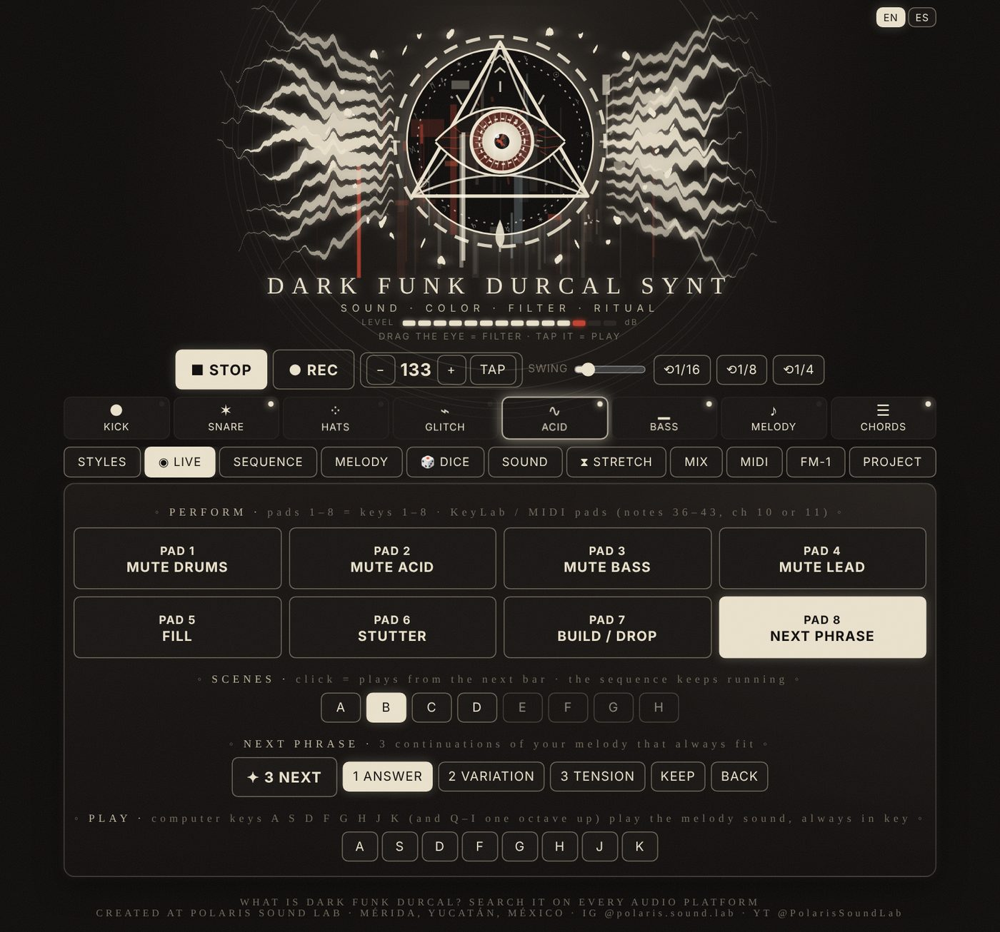
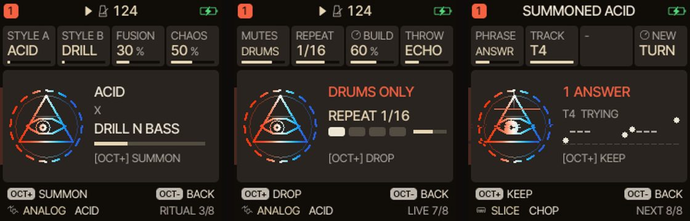

Guía rápidaQuick guide
Elige dónde tocarPick where to play
Los tres suenan igual de oscuros. Empieza por la web: no instalas nada.All three sound just as dark. Start with the web: nothing to install.
- Abre y despiertaOpen and awakenPulsa TOCAR AHORA en Chrome, Edge o Safari y toca ◉ AWAKEN. Usa audífonos: los graves pegan.Press PLAY NOW in Chrome, Edge or Safari and tap ◉ AWAKEN. Use headphones: the bass goes deep.
- SUMMONEn STYLES elige dos estilos (prueba Warped Funk × Broken Funk), el sentimiento y pulsa SUMMON FULL TRACK.In STYLES pick two styles (try Warped Funk × Broken Funk), a feeling and press SUMMON FULL TRACK.
- Tócala en vivoPlay it livePestaña ◉ LIVE: pads 1–4 silencian, 5 fill, 6 stutter, sostén 7 y suelta para el drop. Las teclas A…K tocan la melodía en tono.◉ LIVE tab: pads 1–4 mute, 5 fill, 6 stutter, hold 7 and let go for the drop. Keys A…K play the melody in key.
- GuárdalaKeep itEn PROJECT: guarda, exporta el .mid o graba el audio. Funciona sin internet si descargas el archivo.In PROJECT: save, export the .mid or record the audio. It works offline if you download the file.

- ConectaConnectFM-1 con batería, cable USB-C de datos directo a la compu (sin hub). Cierra apps que usen MIDI.FM-1 charged, a USB-C data cable straight to the computer (no hub). Quit apps that use MIDI.
- Instala en 1 clicInstall in 1 clickAbre el instalador en Chrome o Edge, pulsa Install y permite MIDI. No desconectes mientras dice Writing. Siempre puedes regresar al firmware oficial.Open the installer in Chrome or Edge, press Install and allow MIDI. Don’t unplug while it says Writing. You can always go back to the official firmware.
- RITUAL › SUMMONToca HOME 3 veces, gira K1 y K2 para dos estilos y pulsa OCT+.Press HOME 3 times, turn K1 and K2 for two styles and press OCT+.
- LIVE · NEXTHOME ×7 = LIVE: mutes, repeat, build, throw y OCT+ DROP. HOME ×8 = NEXT: 3 ideas para tu frase y OCT+ KEEP. Perilla K3 IDIOMA = EN / ES (toda la pantalla).HOME ×7 = LIVE: mutes, repeat, build, throw and OCT+ DROP. HOME ×8 = NEXT: 3 ideas for your phrase and OCT+ KEEP. Knob K3 LANG = EN / ES (the whole screen).

- Descárgalo gratisDownload it freeDesde la página del plugin: Mac (Apple Silicon o Intel) o Windows 10/11. gratis y de código abierto.From the plugin page: Mac (Apple Silicon or Intel) or Windows 10/11. free and open source.
- InstalaInstallMac: clic derecho en Install.command › Abrir. Windows: doble clic en Install.bat. Instala el plugin, la app y el script del KeyLab.Mac: right-click Install.command › Open. Windows: double-click Install.bat. It installs the plugin, the app and the KeyLab script.
- En AbletonIn AbletonPlug-Ins › Polaris Sound Lab › Dark Funk Durcal Synt en una pista MIDI. SUMMON o un preset. Arrastra DRAG MIDI a un clip.Plug-Ins › Polaris Sound Lab › Dark Funk Durcal Synt onto a MIDI track. SUMMON or a preset. Drag DRAG MIDI into a clip.
- KeyLab EssentialConéctalo y Ableton lo enlaza solo: la pantalla muestra lo que mueves; pads, faders, perillas y teclas listos.Plug it in and Ableton links it by itself: the screen shows what you move; pads, faders, knobs and keys ready.